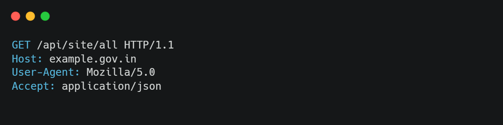
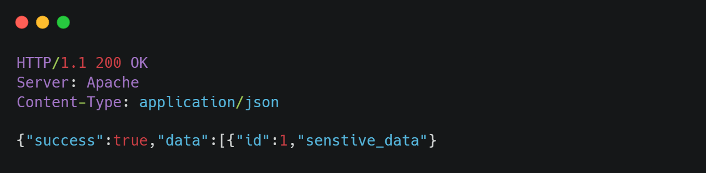
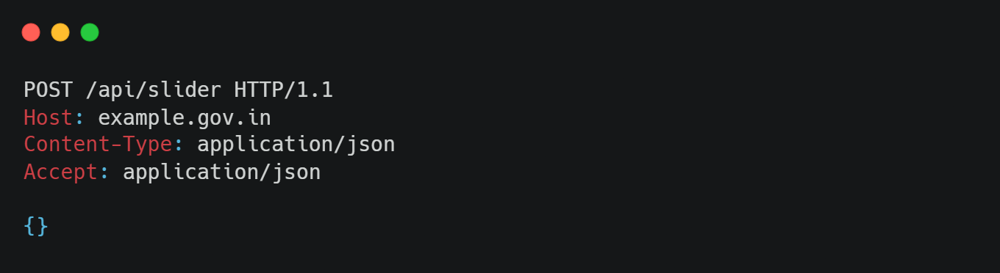
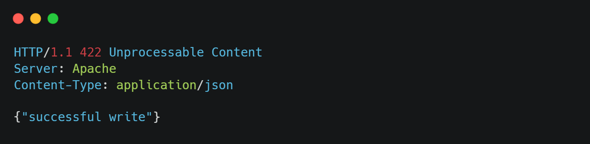

Note:
Before going further, I want to make it clear that I will not be publishing the real website details, domain, credentials, or sensitive technical information in this write-up. Government websites can take considerable time to patch publicly reported vulnerabilities, and publishing those details before remediation could unnecessarily expose the affected system to further abuse. I have already responsibly disclosed the vulnerability to the CERT-In team and provided the relevant information needed for investigation and remediation.Why targeting government portals
It’s not like I want to hack or exfiltrate data from government portals. I do this because our government portals are not secure and are vulnerable to attacks, so I am trying to make these portals more secure by reporting these vulnerabilities to the concerned authorities. I have reported around 20-plus critical vulnerabilities to the CERT-In team. I think that by doing these reports, the government will become aware of these issues and they will take the necessary actions to make these portals more secure.
Exploring the web portal
When I was exploring the web portal, I looked at my Burp request and found that a lot of API calls were happening in the backend, so I was curious to check these API calls and see if they were secure or not. So I started testing these API calls and found that a lot of API calls were made without authentication. The worst part is that sensitive API calls like reading, creating, updating and deleting data are also made without authentication, meaning I can read, create, update and delete the website’s sensitive contents like PII data of officers, employees and citizens. Moreover, I can create, update and delete the website’s content like news, events, notices, circulars, etc.
Moment of truth, making the api call
1. Reading the admin data
When I make a api call to read the admin data, I was able to read the senstive data of the admin.

2. Writing data on admin portal
When I make a api call to write to the admin data, I was able to write the senstive data on admin portal.

same goes with update and delete api calls, I was able to update and delete the data on admin portal.Final Thoughts
This experience highlights the need for government agencies to take the security and maintenance of their public-facing websites more seriously. Vulnerabilities such as API misconfigurations can have consequences far beyond a single compromised application. If exploited by malicious actors, they could potentially result in financial losses, legal consequences, data exposure, and significant damage to public trust and reputation. This should be treated as a serious warning sign. Government websites often handle sensitive information and provide services that millions of citizens depend on. They therefore require regular security assessments, timely patching, secure coding practices, proper credential storage, and continuous monitoring.